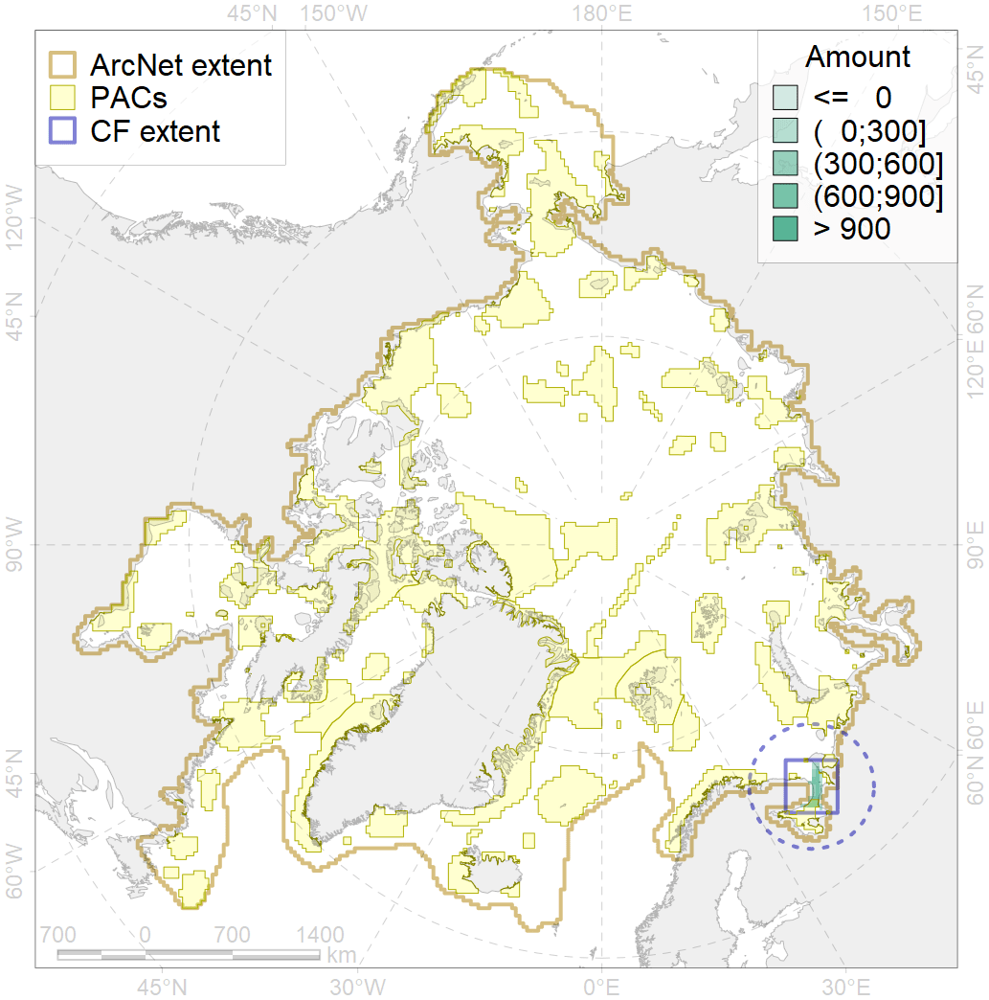
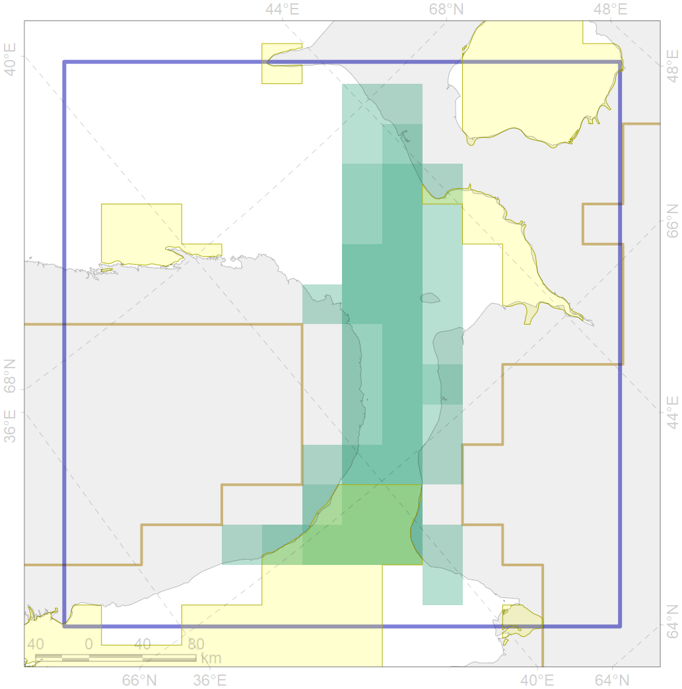

7164

| CF ID | 7164 |
| CF Name | IV.1.1. Gorlo Strait shelf |
| Time Period | At least last 100 years |
| Source(s) | Harris et al., 2014; Carmack, Wassmann, 2006 |
| Seasonality | January - December |
| Depth Horizon | |
| Methodology | Data obtained from the literature |
| Author Name | V. Spiridonov, W. Merritt |
| Notes | |
| Conservation Target Set in the Scenario | 0.222515 |
| Conservation Target Achieved in the Scenario | 0.241 (Scenario: 108.2%) |
| PAC ID | Proportion in the PAC | Contribution to ArcNet Target Achievement | PAC’s Contribution to the Achieved Target |
|---|---|---|---|
| 24 | 0.2% | 0.6% | 0.6% |
| 26 | 29.6% | 91.2% | 84.2% |
| inner | 29.8% | 91.8% | 84.8% |
| outer | 70.2% | 16.4% | 15.2% |